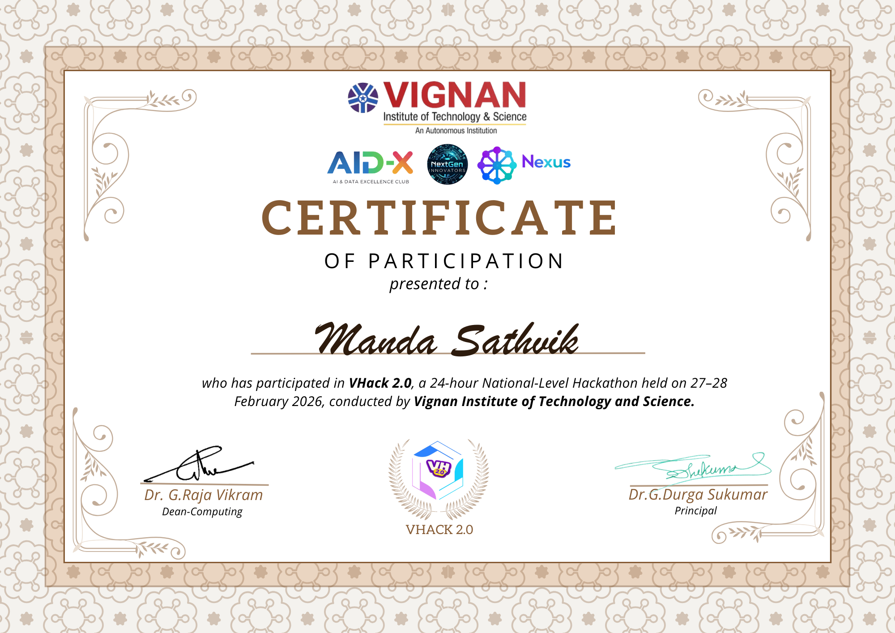

- Copy.jpg)
Sathvik Manda
B.Tech Student | Aspiring Software Developer
Python • JavaScript • Web Development
B.Tech Student | Aspiring Software Developer
Python • JavaScript • Web Development
I am a B.Tech 3rd year student with a strong interest in software development
and problem solving.
I enjoy learning new technologies and building practical
projects that solve real-world problems.
My main areas of interest include web
development, machine learning, and data-driven applications.
Developed a machine learning based system that detects plant diseases using image analysis. The model helps farmers identify plant health issues early and improve crop productivity.
View on GitHub
Participated in a Hackathon and developed innovative solutions with my team.
9949710704
Hyderabad, India